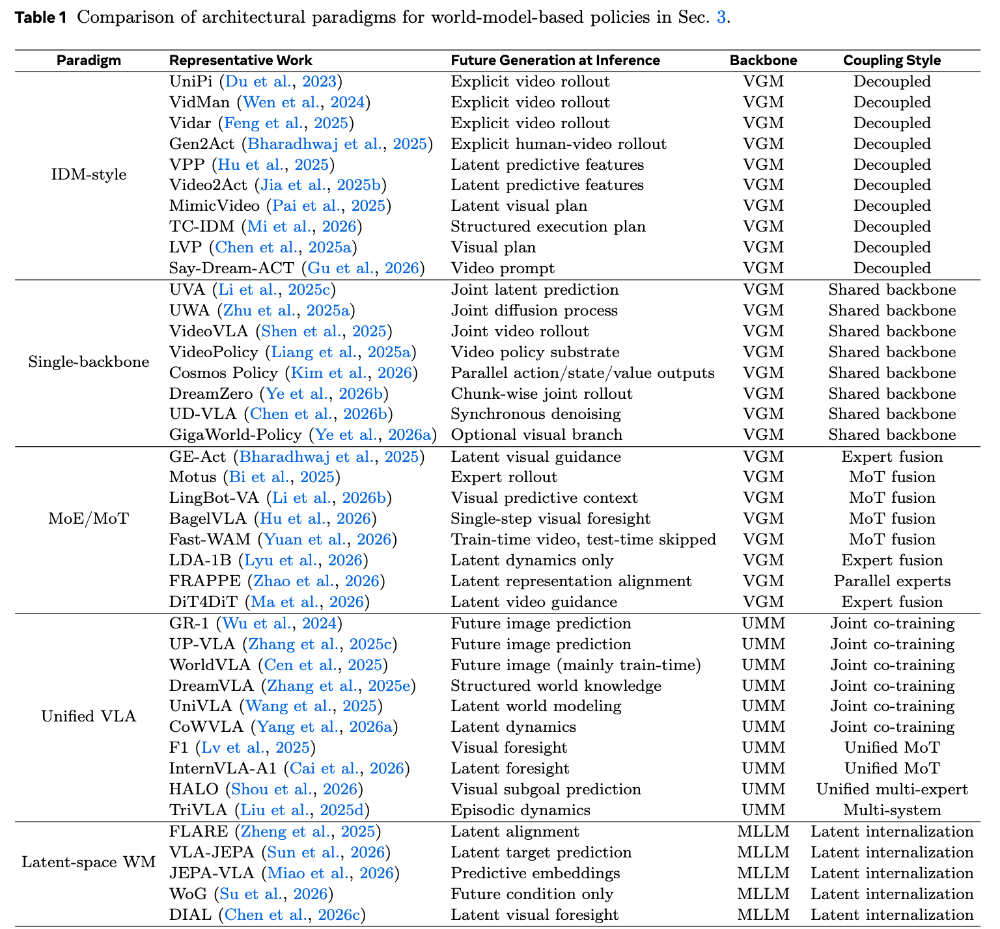
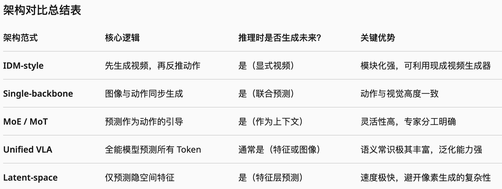
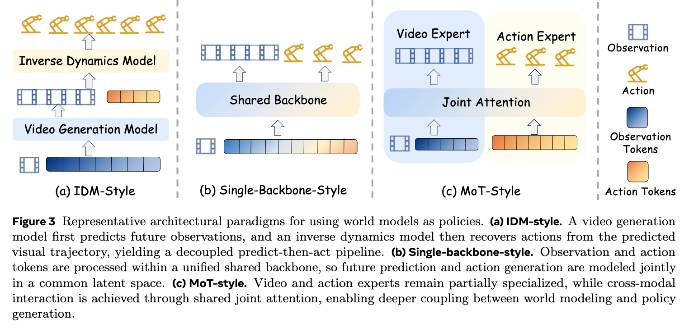
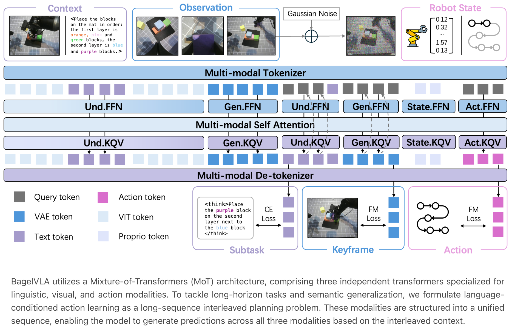
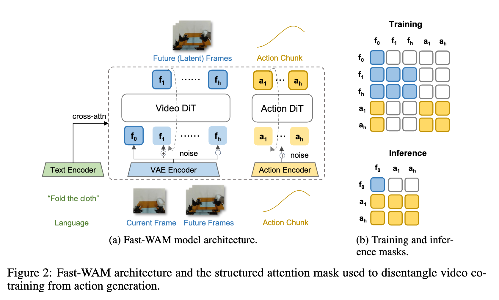
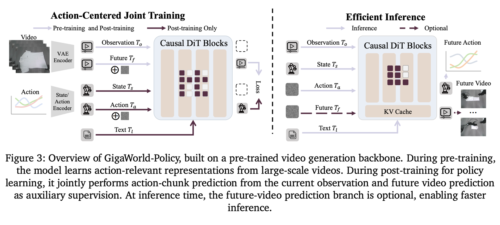

World Model 03
IDM：先想象未来，再反推动作
IDM 的直觉很清楚：视频模型负责“脑补任务成功的未来”，逆动力学模型负责把当前观察和未来观察翻译成动作。 这个拆法很优雅，也暴露了像素未来的工程成本。
Predict then act
普通策略是看到 A 后输出动作 B；IDM 风格路线变成看到 A，再给一个未来 C， 反推出能把 A 推到 C 的动作 B。它最大的好处是复用强视频模型，最大的风险是未来画面对控制不一定足够精确。



代码视角
训练时需要轨迹中的当前观察、未来观察和真实动作。推理时可以滚动执行短 horizon， 每一步用真实新观察重新对齐，避免开放式视频 rollout 越滚越偏。
def train_idm(batch):
obs_t, obs_future, action = batch
pred_action = inverse_dynamics(obs_t, obs_future)
return mse_or_flow_loss(pred_action, action)
def act_with_future(obs_t, instruction):
imagined = video_world_model(obs_t, instruction, horizon=16)
action_seq = inverse_dynamics(obs_t, imagined)
return action_seq[:control_chunk]实现重点
- 未来预测要尽量 action-relevant：工具轨迹、接触状态、物体位姿常常比完整 RGB 更重要。
- IDM 的训练数据必须有动作标签，否则只能学视频到伪动作或 latent action。
- 闭环部署时要做 receding horizon：执行一小段动作后重新观察，而不是一次性相信长视频。



Insight
IDM 的强处是模块化，弱处也是模块化：如果视频未来和动作执行之间的接口只是像素， 逆动力学就要从大量无关视觉细节里恢复控制信号。